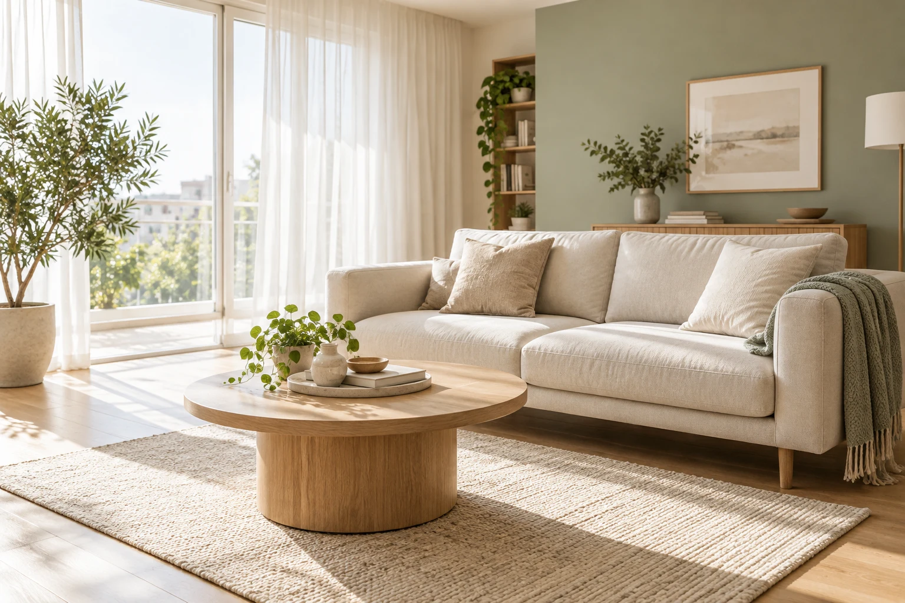

Для привычного порядка
Поддерживающая
Освежить квартиру и вернуть вещам свои места.
- Пыль с доступных поверхностей
- Пылесос и влажная уборка полов
- Кухня снаружи, раковина и санузел
90 ₽ / м²Минимальная уборка — 3 500 ₽
Пока вы занимаетесь любимыми делами, у дома появляется новая порция заботы. Выберите уборку под свой ритм жизни.
Выбирайте нужное.
Стоимость видно до заявки.

Три формата уборкиОт поддержания порядка до уборки после ремонта
Понятный расчётПлощадь, формат и дополнительные услуги
Удобная заявкаВсе пожелания к уборке в одном месте
Услуги
Нужен привычный порядок или большая перезагрузка? Выберите подходящий формат.
Освежить квартиру и вернуть вещам свои места.
90 ₽ / м²Минимальная уборка — 3 500 ₽
Больше внимания деталям и труднодоступным местам.
160 ₽ / м²Минимальная уборка — 6 500 ₽
Подготовить обновлённое пространство к жизни.
210 ₽ / м²Минимальная уборка — 8 500 ₽
Тарифы приведены для демонстрации. Окна и дополнительные услуги рассчитываются отдельно. Вывоз строительного мусора в пример не включён.
Калькулятор
Укажите площадь и выберите нужные услуги. Расчёт обновится сразу.
Как это работает
Сценарий сервиса: от выбора уборки до проверки результата.
Определите формат, площадь и дополнительные услуги в калькуляторе.
Укажите удобную дату и пожелания. В реальном сервисе менеджер подтвердит заказ.
После уборки проверьте помещения по согласованному списку работ.
Вопросы
Детали форматов и работы демонстрационного сайта.
В этом примере поддерживающая уборка охватывает доступные поверхности, полы, кухню снаружи и санузел. Генеральная дополнительно включает плинтусы, двери, фасады шкафов и более тщательную очистку кухни и санузла.
Базовая уборка рассчитывается по площади, но не может стоить меньше минимума выбранного формата. Затем к ней добавляются окна, дополнительные санузлы и выбранные услуги.
В демонстрационном расчёте окна оплачиваются отдельно — по 500 ₽ за окно. Выберите их количество в калькуляторе. Для реальной компании правила для разных размеров окон нужно уточнить отдельно.
Это учебный проект, а «Чисто» — вымышленный бренд. Форма позволяет проверить сценарий, сформировать и скачать заявку. Данные не отправляются в компанию, и реальная уборка не бронируется.
Время для себя